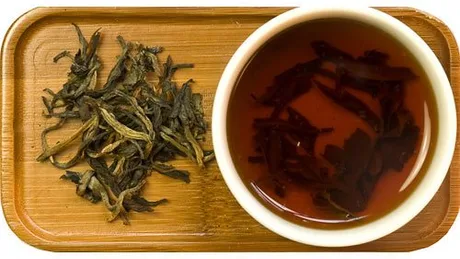
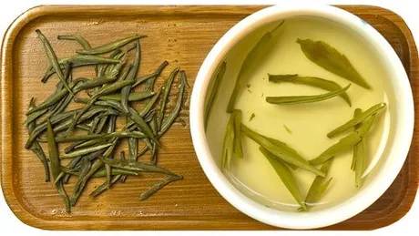
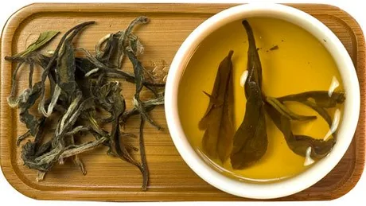

Chinese Tea Classification
Green Tea (绿茶 - Lǜchá)

The most common type of tea, made without fermentation. There are steaming and roasting methods. Produced throughout China, especially famous in Zhejiang and Sichuan.
- 碧螺春 (Bìluóchūn)
- 毛峰 (Máofēng)
- 瓜片 (Guāpiàn)
- 银针 (Yínzhēn)
- 毛尖 (Máojiān)
- 云雾 (Yúnwù)
Red Tea (红茶 - Hóngchá)
Unlike green tea, it undergoes fermentation process, resulting in slightly reddish tea liquor.
- 祁红 (Qíhóng) - Anhui
- 镇红 (Zhènhóng) - Yunnan
- 宣红 (Xuānhóng) - Hubei
- 川红 (Chuānhóng) - Sichuan
Oolong(Black Dragon) Tea (乌龙茶 - Wūlóngchá)

Also known as blue tea. It undergoes partial fermentation where natural fermentation is stopped midway with artificial heat to dry tea leaves.
- 铁观音 (Tiěguānyīn)
- 白毛猴 (Báimáohóu)
- 凤凰水仙 (Fènghuáng Shuǐxiān)
- 黄金桂 (Huángjīnguì)
Flower Tea (花茶 - Huāchá)
Typically made by adding flower fragrance to green tea. Especially popular among Beijing people.
- 茉莉花茶 (Mòlì Huāchá)
- 玫瑰花茶 (Méiguī Huāchá)
- 白兰花茶 (Báilán Huāchá)
- 柚花茶 (Yòu Huāchá)
- 金银花茶 (Jīnyín Huāchá)
White Tea (白茶 - Báichá)
Dried using natural sunlight without artificial heat, with fermentation degree generally below 10%.
- 白牡丹 (Báimǔdān)
- 贡眉 (Gòngméi)
- 银针白毫 (Yínzhēn Báiháo)
Yellow Tea (黄茶 - Huángchá)
Tea with dark yellow color like barley tea, with fermentation degree between green tea and oolong tea.
- 北港毛尖 (Běigǎng Máojiān)
- 广东大叶青 (Guǎngdōng Dàyèqīng)
- 海马宫茶 (Hǎimǎ Gōng Chá)
- 君山银针 (Jūnshān Yínzhēn)
Black Tea (黑茶 - Hēichá)

Tea fermented before tea leaves completely dry. Particularly famous is Yunnan's Pu'er tea.
- 普洱茶 (Pǔ'ěr Chá)
- 普洱紧压茶 (Pǔ'ěr Jǐnyā Chá)
China's Top 10 Famous Teas (中国十大名茶)
If you're unsure which tea to buy, choosing one of China's top 10 famous teas is a good option.
The first two characters represent the tea production area name, followed by the tea name.